The Binding of Isaac Character compendium fan page!
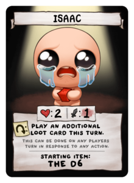Isaac:The starting character for any new file Of the binding of isaac, He is very basic until you get his D6 which is one of the best items in the game, Allowing him to reroll Unwanted items and possibly turning them into something you would want
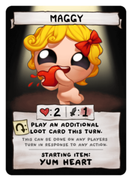Maggy:The known tank character, She is a bit slower that the rest but she makes up for it with her being the tankiest having 4 hearts and a rechargeable Yum heart which fills up a red heart container when used, Very easy for beginners!
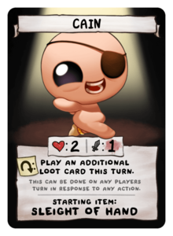Cain:A fan favorite character starts off a bit faster and stronger than other than some other characters but he has only 2 hearts of health, not like you need to worry if you experienced enough!
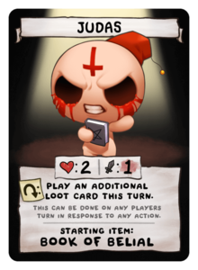Judas:One of the highest damaging characters but also one of the frailest he has 1 red heart and his book of belial which gives him even more damage an exceptional character if used right
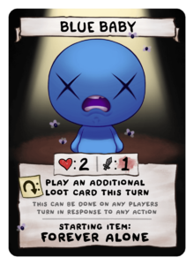This one is weird, He cant have red hearts only soul and dark hearts So he can be a bit difficult for beginners He also starts with slighty higher stats than isaac
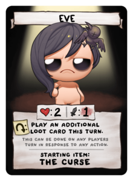Eve:She is interesting she starts with 2 red hearts but when she drops to one or less she transforms into her curse form which gives her higher damage and speed, She loses this form if she goes back above one red heart.
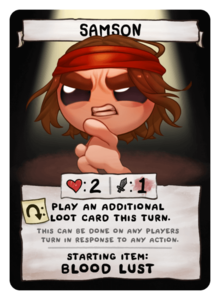Samson:He is an interesting character, Every time he takes damage his rage grows, Which means his damage goes up too! It resets when he moves to the next floor
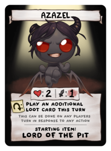Azazel:He has the tied highest Damage of all characters in the game along with that he starts with flight so he can go over gaps and rocks! I consider him to be one of the best and hes one of my favorites!
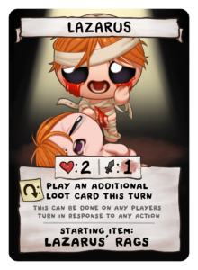Lazarus is quite interesting with the fact of having an extra life and when he dies he comes back as lazarus the second, He gains increased damage and blood creep which hurts enemies that walk on it!

This can be considered to be the toughest character to play since the lost has no health and dies in one hit unless you have holy mantle then he can take one hit per room the 2 bonuses he has is that he can hide on rocks and shoot enemies And he can take devil deals for free...if you can live long enough to get them
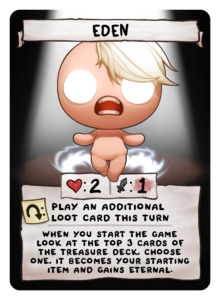Eden is a wild card of sorts, Each run you start you get Random stats,items,health and maybe a pill or card He can be super fun at times and horrible at others
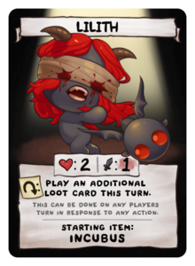Lilith doesnt shoot since she has a blindfold on so she relies on her incubus to shoot for her, It can be a little annoying to work with since your shots are never lined up with your character
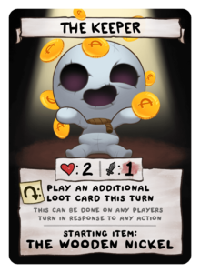I Hate this character, You use coins for health and to heal, he can only take one hit before death unlike the rest of the characters and Have the slowest speed of all characters along with really low fire rate, Hes good if you want a challenge but terrible otherwise
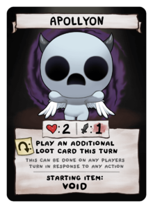Apollyon has an item called the void when used in a room with an item pedistal it will comsume the item. If its an active item it will gain the traits of said item and if its passive it will give apollyon random stat ups The void can become super powerful when used correctly!
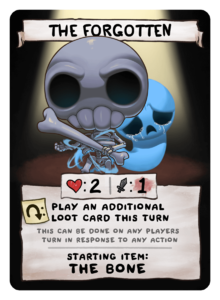This character is a two in one 1,The skeleton. 2,The soul. The skeleton doesnt shoot instead he has like a bat like bone that he swings to deal damage to enemies, he can also charge it up and throws it like a boomarange, The soul does shoot but he has limited mobility since hes chained to the skeleton but while in soul form you can fly and the skeleton can be used as a sheild that blocks bullets